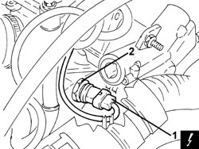
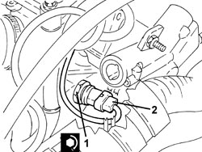
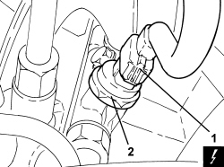

1056F54 FUEL PRESSURE SENSOR R R
- Path
- Procedures > 10 ENGINE > 1056 PETROL INJECTION SYSTEM > 1056F PETROL DIRECT INJECTION SYSTEM > 1056F54 FUEL PRESSURE SENSOR R R
- Kind
- repair procedure (removal / refitting; the operation number is the code)
- Applies to
- engines: 1.9 JTS, 2.2 JTS, 3.2 JTS; all production periods
- Interactive page
- https://sloeber94.github.io/elrnDB/#/939010535
Applies to: engines: 1.9 JTS, 2.2 JTS; all production periods
 Removing
Removing
 Refitting
Refitting1. Disconnect the electrical connection from the fuel pressure sensor.
Description | Connector | |
|---|---|---|
1 | Fuel pressure sensor |
2. Undo the fuel pressure sensor and remove it.

Applies to: engines: 1.9 JTS, 2.2 JTS; all production periods
Refitting
Removing1. Place the fuel pressure sensor in position and tighten it to the recommended torque.
Component | Fastening | dia | Value (daNm) | Validity |
|---|---|---|---|---|
Fuel pressure sensor | - | M12 | (air intake/fuel manifold integrated duct side) 2.0 | 1.9 JTS 2.2 JTS |
2. Connect the electrical connection to the fuel pressure sensor.

Applies to: engines: 1.9 JTS, 2.2 JTS; all production periods
Applies to: engines: 3.2 JTS; all production periods
Removing
Refitting